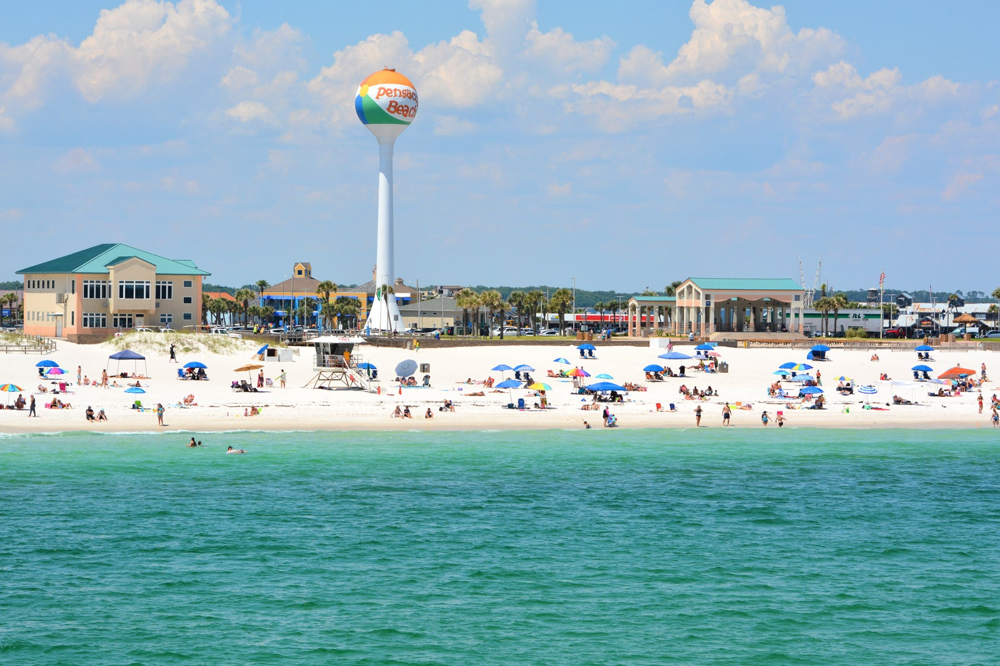

I have been to many different places many of which have historical war forts. I enjoy seeing new things and experiencing new places. My Favorite places I've gone have been South Carolina, Florida, South Dakota, and Colorado. A few summers ago we went on a 2 week road trip with nothing planned except my cousins graduation in colorado, and to come home of course. We went up to Minnesota, over to South Dakota, then to Wyoming which was very boring, down to Colorado for the graduation, kept traveling to Oklahoma, then back up to Illinois.
